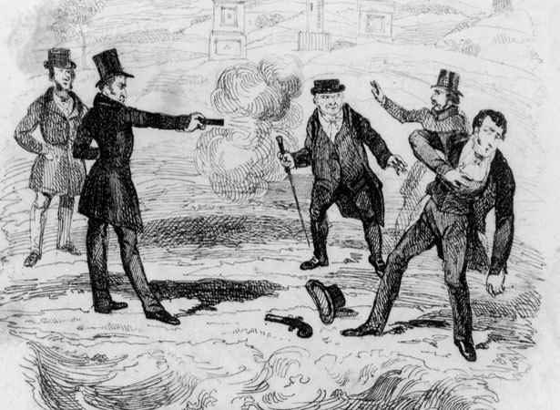
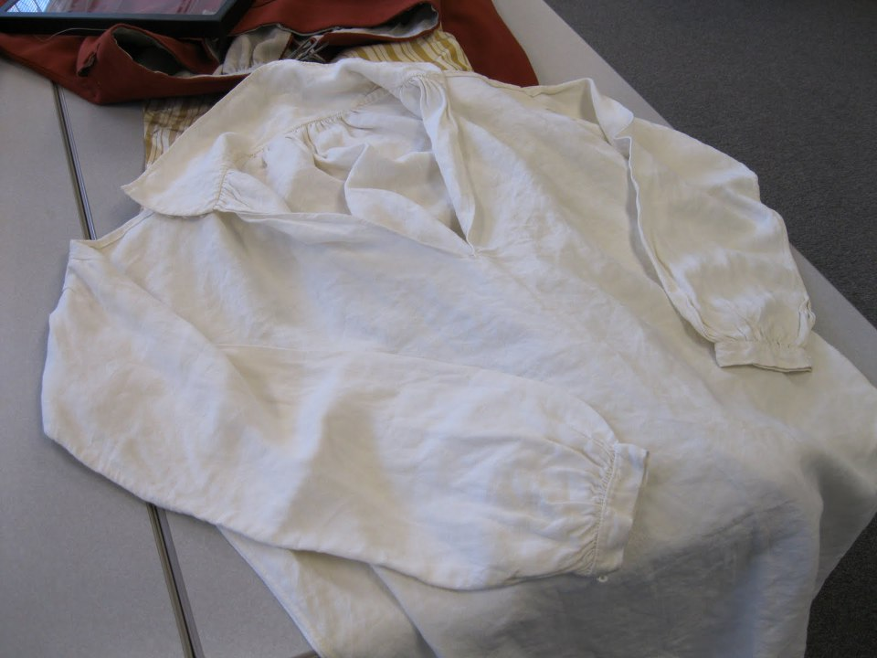
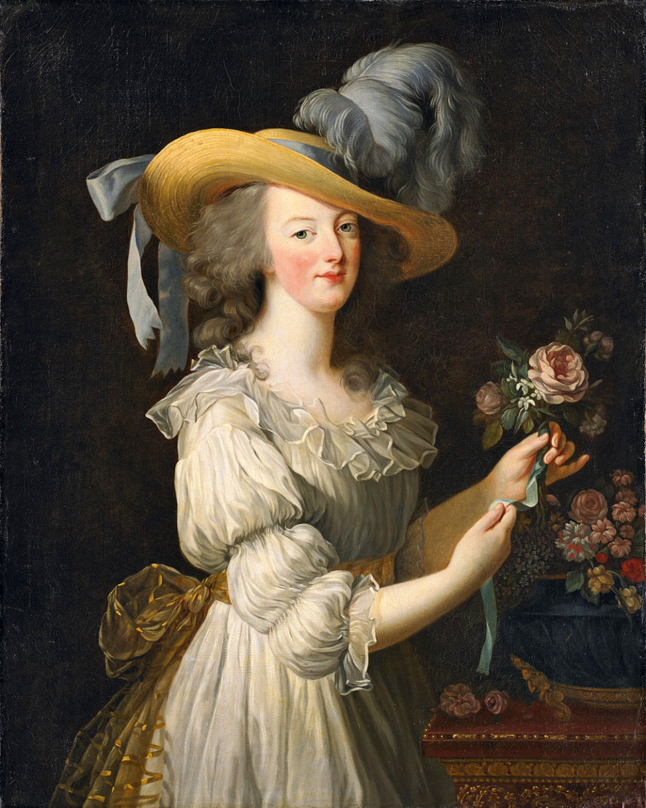
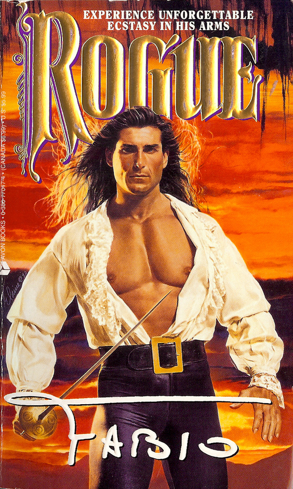
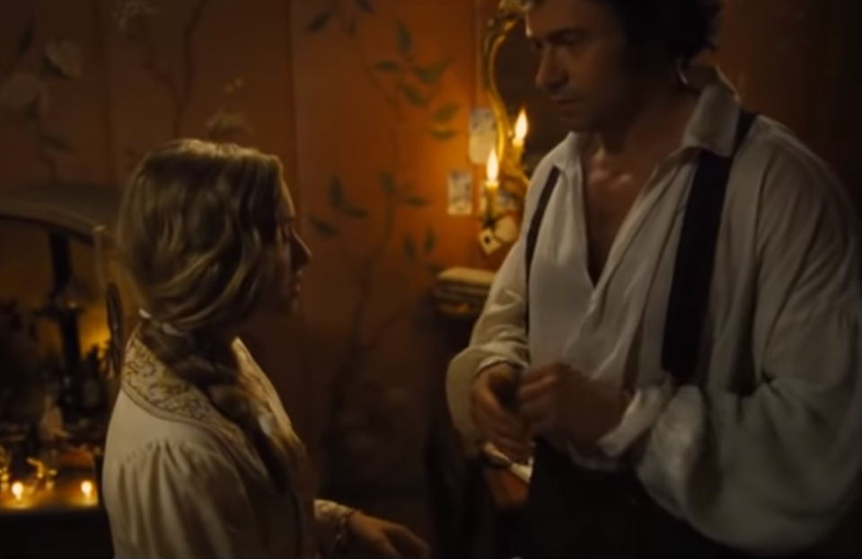
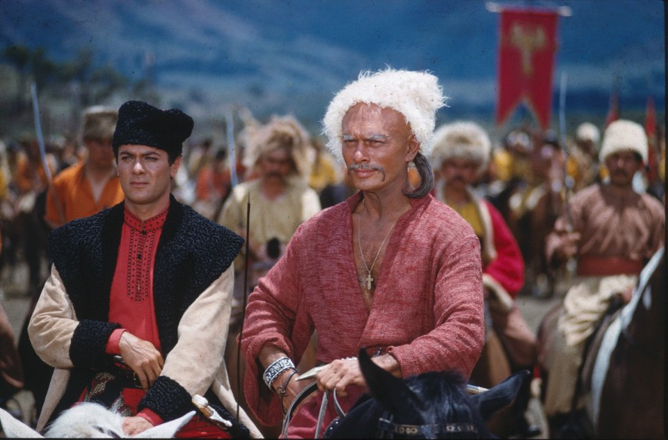
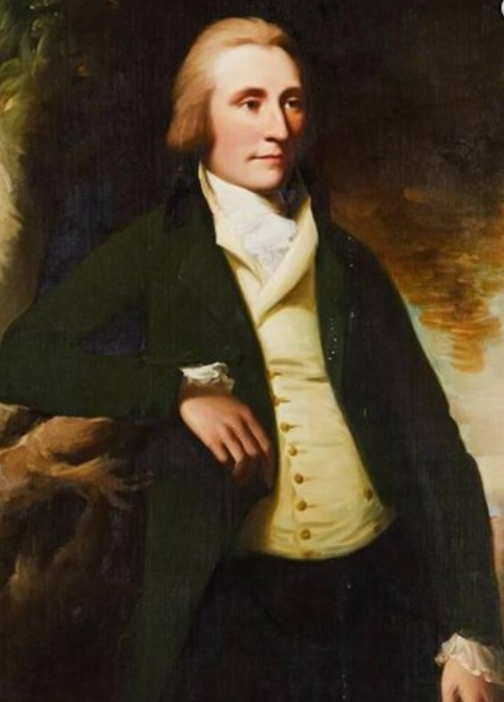
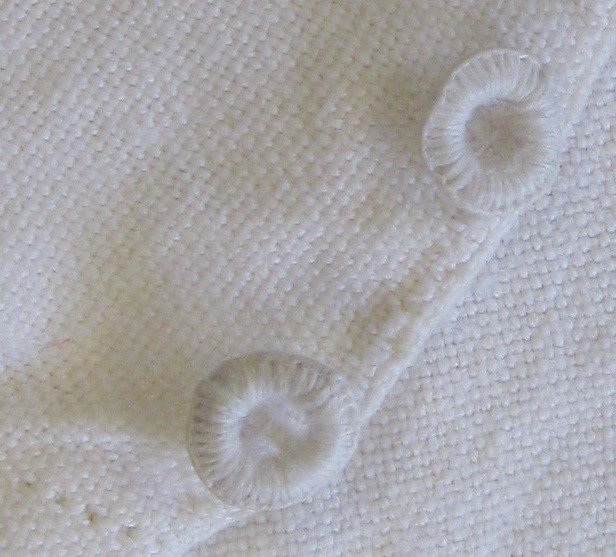
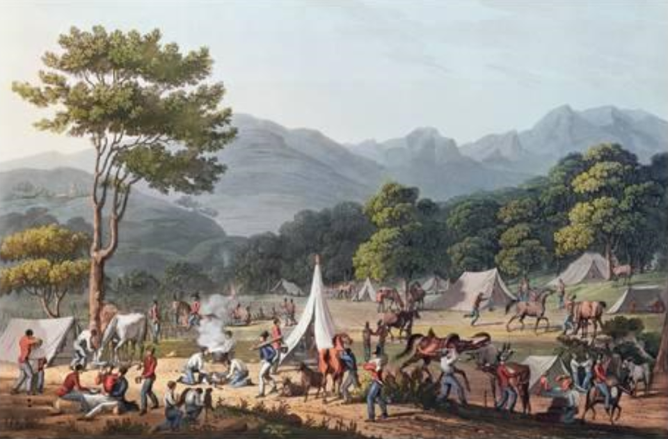

왕과 농부가 함께 입던 옷 - 나폴레옹 시대 병사들의 셔츠 이야기
게시: 2018-12-17T06:30:00+09:00
전에 제가 블로그에서 아래 구절을 인용하면서 결투를 할 때 신사들은 실크로 된 셔츠를 입고 싸우거나, 실크 셔츠를 입을 형편이 안 되는 신사들은 아예 셔츠를 벗고 싸웠다고 언급한 적이 있었습니다. 무명이나 삼베로 된 옷은, 총알에 맞으면 그 부위가 총알 모양으로 동그랗게 잘려나가며 총알과 함께 살 속으로 파고 들게 되는데, 그것이 결국 염증을 일으킵니다. 그에 비해 무척 질긴 섬유인 실크는 총알에 맞더라도 찢어질 뿐 파편이 잘려나가지는 않기 때문에 상처 속에 실크 파편을 남기지 않는다는 것입니다.
HMS Surprise by Patrick O’Brian (배경 180X년 인도) -------------
(잭 오브리의 친구인 군의관 스티븐 매튜어린이 여자 문제로 동인도 회사의 고위 간부와 권총 결투를 벌입니다.)
스티븐은 코트를 벗더니, 이어서 셔츠까지 벗어서 조심스럽게 접어놓았다.
“자네 대체 뭐하는 건가 ?” 잭이 옆으로 와서 나직히 물었다.
“난 항상 바지만 입고 싸운다네. 상처 속으로 말려들어간 천 조각은 아주 끔찍한 결과를 낳거든.”
----------------------------------

(즉, 이렇게 셔츠 뿐만 아니라 코트까지 입고 권총 대결을 벌이시는 분들은 뭘 몰라도 한창 모르거나 또는 목숨보다 체면을 중요시하는 분들입니다.)
그런데 최근에 인터넷에서 18세기 시절의 세탁 방법 관련 정보를 검색하다가 "Two Nerdy History Girls" 라는 웹사이트에서 매우 흥미로운 정보를 발견했습니다. (맨 아래 source 부분에 URL 올려놓았습니다.) Loretta Chase와 Susan Holloway Scott이라는 두 여성 작가분이 운영하는 이 역덕 사이트에 따르면 적어도 18세기 영국 신사들의 셔츠는 절대 실크로 만들지 않았답니다. 예수님 말씀에서도 알 수 있듯이, 원래 셔츠라는 것은 속옷 개념의 옷이었거든요.
마태 5:40
또 너를 고발하여 속옷을 가지고자 하는 자에게 겉옷까지도 가지게 하며
And if anyone wants to sue you and take your shirt, hand over your coat as well.
그래서 원래 제대로 된 신사들은 절대 셔츠 바람으로 돌아다니지 않고 항상 겉에 자켓을 입고 다니며, 자기 사무실에서도 셔츠 위에 조끼(베스트)를 입는다고 합니다. 그런 양반들은 한국의 찜통 더위에 한번 제대로 당해봐야 정신을 차릴 것 같습니다....만, 실제로 제 후배 직원 중 아주 잘 생기고 깔끔한 친구 하나는 정말 더운 여름철 사무실에서도 항상 양복 자켓을 입고 있었던 것이 기억납니다. (그 친구 지금은 월급 많이 주는 더 좋은 회사로 갔습니다.)
이 역사학자들의 말씀에 따르면 - 저는 맞는 말씀 같다고 생각합니다 - 19세기 중반까지 셔츠라는 옷은 유럽 사회에서 가장 민주적인 의류였다고 합니다. 당시 영국 국왕이었던 조지 3세의 셔츠나 그의 시종들이 입었던 셔츠나 재질이나 디자인이 사실상 거의 똑같았다고 합니다. 어차피 속옷인걸요 !

(왕도 장군도 병사도 농부도 다 똑같은 디자인의 옷을 입다니 !!)
당시 셔츠는 거의 모두 동일하게 아마포(linen)으로 만들었습니다. 속옷을 실크로 만드는 일은 (설령 있었다고 해도) 거의 없었습니다. 요즘 속옷은 다 면으로 만듭니다만, 당시 면포는 속옷 따위로 쓰기에는 아직 너무 비싼 물건이었습니다. 면으로 만든 천인 모슬린(muslin, mousseline)은 마리 앙뜨와네트가 드레스로 만들어 입을 정도로 비싼 유행품이었습니다. 나폴레옹이 산업 시찰을 가기 직전에 조세핀과 부부 싸움을 벌인 이유도 모슬린 때문이었습니다. 나폴레옹은 프랑스 리용(Lyon)산 견직물(비단)로 만든 드레스를 입으라고 지시했는데 조세핀은 당시 대유행이던 모슬린 드레스를 고집했거든요. 물론 그런 모슬린은 인도를 독차지한 영국산이었으니 산업 시찰을 나가는 나폴레옹으로서는 도저히 용납할 수 없는 물건이었습니다.

(모슬린 드레스를 입은 앙뜨와네트의 유명한 초상화입니다. 당시 앙뜨와네트가 검소해서 비단이 아닌 면직으로 만든 드레스를 입은 것이 아닙니다.)
물론 같은 아마포 셔츠라고 해도 신사용 셔츠를 만드는 아마포는 더 하얗고 고운 실로 짠 것이었겠고 바느질도 더 촘촘하게 되어 있었을 것이며 다림질도 더 잘 되어 있었겠지요. 부유한 신사의 셔츠 소매 등에 레이스 등의 장식이 있을 수도 있었습니다. 그러나 기본적으로 왕이든 신사든 농부든 모든 셔츠의 디자인은 동일했답니다. 현대 정장 차림에서는 와이셔츠가 앞이 완전히 열려 있고 그걸 많은 수의 단추로 잠그는 형태입니다만, 당시 셔츠는 무조건 머리 위로 뒤집어 쓰는, 그러니까 요즘의 티셔츠 같은 스타일이었습니다. 그리고 열린 목과 소매를 단추로 잠그는 형태였지요. 또 당시의 셔츠는 품이 매우 넉넉한 편이었습니다. 요즘도 속옷의 사이즈는 그다지 중요하지 않듯이, 당시 속옷 개념이었던 셔츠도 사람의 체격이나 체형에 따라 옷이 맞지 않는 경우가 없도록 어느 정도 프리사이즈로 만들었기 때문이었습니다. 그래서 군대나 군함 등에서는 고참이 후임의 깨끗하게 세탁해놓은 셔츠를 빼앗아 입기도 한 모양입니다.

(그러니까 이 분처럼 가슴팍은 물론 복근까지 다 까보이는 셔츠는 존재하지 않았다는 이야기...)
Mr. Midshipman Hornblower by C.S. Forester (배경 : 1790년대 HMS Justinian 함상) ----------------
(10대의 혼블로워가 사관후보생 생활을 하고 있는 군함에는 못된 고참 사관후보생이 있어서 후임들을 몹시 괴롭히고 있는 상태입니다.)
가장 큰 원망을 자아냈던 것은 그 고참의 일상적인 수탈 행위가 아니었다. 후임 사관후보생들로부터 깨끗한 셔츠를 빼앗아 입는다든가, 식사로 나오는 고기 중에서 가장 맛있는 부분을 자기 몫으로 독차지한다든가, 심지어 후임들 몫으로 나오는 럼주를 빼앗는 것조차도 참을 만한 일이었다. 그런 것들은 이해할 만한 수준으로 넘어갈 만한 일이었고, 후임들도 만약 그럴 권력이 손에 들어오면 스스로도 저지를 만한 일이었다. 그러나 그 고참에게는 고전 교육을 받은 혼블로워에게 로마 황제들의 광기를 연상시키는 종잡을 수 없는 변덕성이 있었다.
-------------------------------

(영화 레미제라블에서 코제트가 'In My Life'를 부를 때의 장면입니다. 장발장이 저렇게 셔츠 바람으로 나오는데, 의복 고증이 매우 잘 된 케이스라고 할 수 있습니다. 다만 목 부분의 열린 부분이 약간 많이 파인 것 같군요 ?)
그렇게 목과 소매의 단추를 풀기만 하면 무척 편한 속옷이다보니 자연스럽게 많은 사람들이 잠옷으로도 사용했습니다. 즉, 잠을 잘 때는 따로 잠옷을 입고 자는 것이 아니라 그냥 자켓과 바지만 벗고 그냥 셔츠 바람으로 자는 것이었지요. 당시 셔츠는 꽤 길어서 넓적다리를 덮을 정도의 길이였거든요. 실제로 잠옷이라는 영어인 파자마(pajama)는 원래 인도에서 유래된 단어로서, 인도 식민지에서 영국인들이 배워온 것이었고 이 단어가 영국에 정착한 것은 19세기 후반인 빅토리아 여왕 시대였습니다. 뿐만 아니었습니다. 길이가 길다보니 당시 셔츠는 정말 속옷 역할도 톡톡히 했습니다. 당시의 신사들은 별도의 속옷 하의(drawers)도 입긴 했습니다만 많은 서민들은 그냥 셔츠가 속옷 하의 역할까지도 했습니다. 즉 긴 셔츠의 아랫자락을 다리 사이에 넣어서 남성의 주요 부위를 감싸는 역할까지도 했던 것입니다.
좀 더럽지 않냐고요 ? 예, 좀 더러웠습니다. 그래서 당시 셔츠가 가장 민주적인 의류였다고는 해도, 당연히 귀족이 입는 것과 밭일하는 농부가 입는 셔츠는 차이가 있었는데, 그 중에서도 가장 크게 차이가 나는 부분이 바로 청결함이었습니다. 신사들은 자주 셔츠를 갈아입었고 특히 외출을 할 때는 닳지 않고 하얀 새 셔츠만 입은 것에 비해, 서민들의 셔츠는 누렇게 찌들고 여기저기 헤어지고 너덜너덜해진 셔츠를 입어야 했습니다. 신사 중에서도 진짜 부유한 신사는 조금 헤어지고 변색된 셔츠를 하인들에게 던져 주었을 것이지만, 신사치고는 가난한, 가령 레미제라블의 마리우스 같은 청년은 구멍난 셔츠 팔꿈치 부분은 물론 헤어지고 닳은 소매 부분이 자켓 밖으로 보이지 않도록 노심초사해야 했을 것입니다. 17세기 중반 폴란드와 우크라이나를 배경으로 한 고골리(Nikolai Gogol)의 소설 '대장 부리바'(Taras Bulba)에서도 어떤 폴란드 귀족을 묘사하면서, '행사장에는 화려하게 잔뜩 껴입고 나왔지만, 집에는 구멍난 셔츠와 낡은 구두 한켤레 밖에 없는 신세'라고 조롱하는 부분이 나오지요.
서민들은 낡고 헤지고 구멍난 셔츠를 끝까지 버리지 않고 입다가 완전히 넝마조각이 되면 그걸 또 푼돈을 받고 팔았습니다. 당시는 생산성이 무척이나 떨어지고 물건이 귀한 시대였습니다. 헌 셔츠도 하나도 붕대로든 걸레로든 다 쓸모가 있는 시대였거든요. 더 밑에서 설명하겠습니다만, 당시 그런 아마포 셔츠는 한벌에 대략 6실링 정도 했습니다. 현재 가치로는 7만원 정도하는 셈이지요. 하지만 당시 비숙련 노동자의 일당이 1실링이라는 점을 생각하면, 요즘 최저 임금으로 계산하면 당시 사람들의 체감상으로는 대략 30만원 정도 했던 것입니다. 셔츠가 닳고닳아서 넝마조각이 될 때까지 입었던 이유가 다 있었던 것이지요.

(율 브린너가 부리바로, 토니 커티스가 그 아들로 나왔습니다. 어렸을 때 정말 재미있게 본 영화였습니다. 물론 흑백 TV로요.)
하지만 현대 정장에서 와이셔츠의 칼라 부분이 무척 중요한 것처럼 당시 신사들의 옷차림에서도 목 부분은 자켓 밖으로 드러나지 않았냐고요 ? 가만 보면 당시 초상화의 신사님들과 장군님들의 목 부분은 목에 매는 별도의 장식 천, 즉 neckcloth나 초기 형태의 넥타이인 cravat 등으로 잘 가려져 있습니다. 물론 살짝 드러난 셔츠의 목자락 부분이 누렇게 찌들어 있다면 그 창피함은 말할 수 없었겠지요.

(자켓 밑에 드러난 단추 많이 달린 옷은 셔츠가 아니라 조끼(vest)입니다. 조끼 위로 드러난 셔츠의 대부분은 넥클로쓰(neckcloth)로 덮혀 있습니다. 당시 신사들은 아무리 더워도 저 넥클로쓰를 풀지 않았다고 합니다. 하지만 그건 영국에서나 통할 이야기이고 인도에서는...)
당시 셔츠에서 또 한가지 이색적인 부분은 목과 소매의 단추입니다. 당시에는 플라스틱이 없었으니 셔츠의 단추로 어떤 것을 썼을 것 같습니까 ? 나무 ? 상아 ? 설마 녹슬지 않는 구리 ? 물론 부잣집에서야 색다른 재료를 쓸 수도 있었겠습니다만, 표준적인 재료는 바로 아마포 그 자체였습니다. 아마포 실을 둥글게 뭉치고 매듭을 지어 헝겊 단추를 만든 것입니다. 이는 두가지 때문이었습니다. 나무 같은 단단한 물건으로 단추를 만들면 그로 인해서 옷이 더 빨리 닳습니다. 게다가 세탁 비누가 없던 당시의 빨래 방법은 잿물과 삭힌 오줌 등의 괴이한 세제로 옷을 불린 뒤에 몽둥이로 무자비하게 옷을 두들기는 것이었거든요. 그런 과격한 세탁 방법을 견딜 재료가 마땅치 않았던 것입니다.

(헝겊 단추라니 ! 굉장히 이색적이지만 생각해보면 꽤 실용적인 것이기도 합니다.)
자, 나폴레옹 시대의 영국군 병사들의 셔츠는 어땠을까요 ? 물론 마찬가지로 동일한 형태의 셔츠를 입었습니다. 당시 복장 규정은 연대마다 또 시대와 환경에 따라 다 달랐습니다만, 대개 3~4벌의 셔츠를 가지고 있어야 했습니다. 가령 1800년 제40 보병연대의 경우 병사들이 소지해야 하는 셔츠의 수량과 재질과 크기는 물론 그 가격에 대해서도 세밀한 규정이 있었습니다. 즉 '1야드 당 1실링 6펜스 짜리 아마포로 1실링 짜리 바느질삯을 주고 만들어진 셔츠를 4벌씩 준비하되, 목과 소매 길이가 넉넉해야 한다'라는 규정이 있었던 것입니다. 당시 영국군 병사들의 셔츠는 재질과 구입 장소에 따라 한벌에 대략 4실링에서 10실링까지의 가격대가 있었다고 합니다. 평균 6실링이라고 해도, 모병제였던 당시 영국군 병사들의 급여가 일당 1실링이었으니 결코 싼 가격이 아니었습니다. 군대인데 군복을 자기 돈으로 마련해야 하는 건 너무 하지 않느냐고요 ? 당시 군에서 일괄적으로 셔츠를 지급하기도 했습니다. 그러나 그렇게 지급된 셔츠들은 (당시 영국도 방산 비리가 심각하여) 재질이나 바느질 품질이 형편없었고 그나마 가격을 아무 할인 없이 시장가 그대로 쳐서 병사들 급여에서 공제했으니 병사들로서는 군에서 지급하는 셔츠가 전혀 반갑지 않았을 것 같습니다. 그러다보니 실제로 전선에 투입되어 검열이 좀 느슨해진 병사들은 2벌의 셔츠만 가지고 있는 경우도 꽤 있었던 모양입니다. 병사들로서야 돈이 나가는 것보다는 그냥 좀 더럽고 구멍난 셔츠를 입고 있는 것이 훨씬 더 좋았을테지요.
이것이 현실이었기 때문에 1811년 정도가 되자 장교 위원회에서 병사당 2벌의 셔츠만 소지하면 되는 것으로 규정을 바꾸자는 건의를 올렸고 영국 육군 사령부에서도 그 건의를 받아들여 1812년 정식으로 복장 규정을 바꾸었습니다. 이유는 금전적 부담이 아니라 병사들의 배낭이 너무 무겁다는 이유에서였습니다. 하긴 당시 그렇게 넉넉한 품의 아마포 셔츠는 무게가 1파운드, 그러니까 0.453kg이나 되었으니 결코 가벼운 것은 아니었지요. 하지만 전쟁이 끝나자 결국 이 규정은 1817년 다시 '3벌 소지'로 바뀌게 됩니다.
저 위에서 당시 모든 셔츠는 아마포가 표준이라고 했는데, 항상 혁신은 군대에서 일어나는 법입니다. 1812년 캐나다에 주둔했던 영국군은 아마포 셔츠 외에 모직인 플란넬(flannel) 셔츠도 가지고 있었습니다 ! 심지어 1814년 북부 캐나다에 주둔하고 있던 제89 연대 제2 대대의 모리슨(Morrison) 중령이라는 분은 아래와 같은 명령서를 발행하기도 했습니다.
"플란넬 셔츠를 지급받은 병사들 중 몇몇은 여전히 가끔씩 아마포 셔츠를 입는 것으로 밝혀졌다. 이는 건강에 해로운 것이므로 용납할 수 없다. 이런 일을 방지하기 위해 각 중대 지휘관들은 플란넬 셔츠가 지급되는 대로 기존 아마포 셔츠를 금지하고 처분하도록 강제하기를 바란다."
물론 플란넬 셔츠가 더 비쌌습니다. 한벌에 8~10실링 정도 했으니, 6실링짜리 아마포 셔츠보다 약 1.5배 더 비싼 것이었지요. 그 비용을 고스란히 부담해야 했던 병사들의 원망이 있었겠습니다만, 사령부에서는 플란넬 셔츠가 병사들의 건강에 더 유리하다고 판단했던 모양입니다. 결국 캐나다에 비해 더 따뜻한 지방이었던 스페인 전역에서도 플란넬 셔츠가 지급되었습니다. 심지어 열대 지방인 자메이카 주둔 부대에도 플란넬 셔츠가 지급되었다고 합니다.
1804년에 나온 로버트 잭슨(Robert Jackson)이란 분의 '군대의 구성, 규율, 경제성에 대한 체계적인 관점'이라는 책에는 다음과 같이 플란넬 셔츠의 장점을 찬양하고 있습니다.
"플란넬은 아마포보다 더 온기를 잘 보존한다. 습기 흡수도 잘 되고 피부에 닿는 감촉도 더 좋은 재료이다. 더운 날씨에서는 땀을 재빨리 흡수한다. 추운 지방에서는 비에 젖는 것이 건강에 무척 해로운데 플란넬로 몸을 감싸면 그 해로움이 덜해진다."
글쎄요, 모직이 땀을 더 잘 흡수하고 피부에 기분 좋은 감촉을 주나요 ?? 저는 전혀 동의못할 내용입니다. 아마 저 잭슨이라는 분의 친척이 모직 공장을 운영하든가 또는 양떼 목장을 가지고 있었던 것이 아닌가 의심스럽네요. 실제로 몇몇 병사들은 플란넬 셔츠를 맨살에 입는 것을 꺼려 했습니다. 1799년 10월, 제49 연대의 제임스 피츠기본스(James Fitzgibbons) 하사는 '도저히 플란넬이 맨살에 닿는 느낌을 견딜 수 없다' 라며 아마포 셔츠를 밑에 입고 그 위에 플란넬 셔츠를 입었다고 기록하고 있습니다.
병사들을 괴롭히던 것은 더운 날의 플란넬 셔츠 뿐만 아니었습니다. 당시 복장 규정은 셔츠의 목과 소매의 단추를 항상 채우도록 되어 있었습니다. 진지 구축 작업 등을 할 때 군복 자켓을 벗고 일하는 것은 허락될지라도, 소매를 걷어올리거나 목 부분을 풀어헤치는 것은 용납되지 않았습니다.

('빌라 벨라(Velha) 근처에서 숙영 중인 부대' 라는 1811년 C, Turner의 판화입니다. 소매를 걷은 병사들이 없다는 점 보이십니까 ?)
위에서 '당시 셔츠는 비교적 프리 사이즈'라고 언급했는데, 특히 그렇다면 병사들끼리 셔츠를 훔치거나 하는 경우가 많지 않았을까요 ? 실제로 좀 그랬나 봅니다. 특히 전장에서는 병사들이 현지 주민들에게서 술이나 음식을 사기 위해 셔츠를 팔아먹는 경우가 종종 있었습니다. 자기 것을 벗어 주는 경우도 있었겠지만 전우의 것을 훔쳐서 주는 경우도 있었겠지요. 그 때문인지 1811년에는 셔츠에 잉크로 소유자의 이름을 표시하라는 새로운 규정이 나왔다고 합니다.
Source : http://www.warof1812.ca/shirts.htm
http://twonerdyhistorygirls.blogspot.com/2011/04/finer-points-of-18th-c-mans-shirt.html?m=1
https://militaryhistorynow.com/2016/11/03/pistols-at-dawn-officers-gentlemen-and-duelling-in-the-18th-and-19th-centuries/
https://en.wikipedia.org/wiki/Duel
https://en.wikipedia.org/wiki/Matthew_5:40